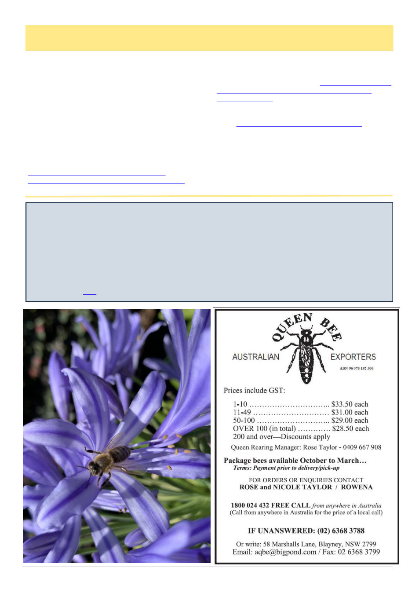

April 2026
15
Varroosis, cont’d
(Continued from page 14)
ing, to cleanly adopt the precise and official term Var-
roosis when talking about the effects of Varroa on a
hive.
References
1. Shimanuki, H., Calderone, N.W. & Knox, D.
1994. Parasitic mite syndrome: the symptoms. Ameri-
can Bee Journal, 134: 827–828.
2. World Organisation for Animal Health (WOAH).
2021. Varroosis of honey bees (infestation of honey
bees with Varroa spp.). In: Terrestrial Animal Health
Code, Chapter 3.2.7. WOAH, Paris. Available at:
https://www.woah.org/fileadmin/Home/eng/
Health_standards/tahm/3.02.07_VARROOSIS.pdf
(accessed 2026-03-27).
3. WOAH (World Organisation for Animal Health).
2024. Terrestrial Animal Health Code, 32nd edition,
Chapter 9.6: Infestation of honey bees with Varroa spp.
(Varroosis). Paris: WOAH. https://www.woah.org/
fileadmin/Home/eng/Health_standards/tahc/2024/
4. Greene, R. & Dalton, K. 1953. The premenstrual
syndrome. British Medical Journal, 1(4818): 1007–
1014. https://doi.org/10.1136/bmj.1.4818.1007
5. Hung, A.C.F., Adams, J.R. & Shimanuki, H.
1995. Bee parasitic mite syndrome (II): the role of Var-
roa mite and viruses. American Bee Journal, 135: 702–
704.
6. Winston, M.L. 1987. The Biology of the Honey
Bee. Harvard University Press, Cambridge, Massachu-
setts. 281 pp.
Scientists uncovered the nutrients bees were missing — Colonies surged 15-fold
University of Oxford
A lab-made diet supercharged bee colonies and could help save our food supply.
Scientists have developed a breakthrough “superfood” for honeybees by engineering yeast to produce the essential
nutrients normally found in pollen. In controlled trials, colonies fed this specially designed diet produced up to 15
times more young, showing a dramatic boost in reproduction and overall health. As climate change and modern
agriculture reduce the availability of natural pollen, this innovation could offer a practical way to support struggling
bee populations.
See the full story here
Photo: Tino Corsetti